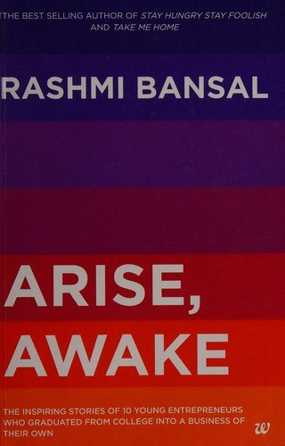

Library › Business & Startups
Arise, Awake — Summary & Key Lessons

They started companies from hostel rooms and lecture benches, before their twenties ended. Ten student founders, ten unfiltered stories.
📖 OPEN THE FULL INTERACTIVE BREAKDOWN →🌐 Read it in Hindi, Hinglish, Gujarati, Tamil & 22 more languages — free, with audio.
💡 The Big Idea
Bansal profiles student founders who did not wait for degrees, permission or funding: a boy who sold t-shirts to pay his fees, engineers who turned final-year projects into companies, a dropout who built a fitness chain. The pattern across the stories is not genius; it is starting embarrassingly small, learning publicly, and surviving the shame that stops most people from beginning. The book's gift is permission: the barrier to starting is not capital or age, it is the willingness to be a beginner in front of your friends.
🧠 The 8 Key Lessons
Lesson 1: Start Before You Feel Legitimate
The Hostel Years
Every founder in the book began while unqualified: no network, no capital, sometimes no majority age for contracts. They started anyway because student life offered the cheapest failure tuition in the world: no salaries to pay, no families depending on them, time to iterate. Legitimacy is a byproduct of starting, not a prerequisite.
📖 Example: One founder began by selling fonts and websites to local businesses from his hostel computer; the pocket money scale of those first deals taught him pricing, follow-up and delivery long before any investor looked at him. Read the full example →
⚡ Do this: Identify the smallest sellable version of your idea and sell one unit this week. One. The scale is not the point; the evidence is.
Lesson 2: Campus Is a Free Lab and a Free Market
Your First Customers Are Classmates
College gives founders what startups pay for: a dense user base, instant feedback, volunteer labor and low-stakes distribution. The successful students treated campus as a market to serve, not a jail to escape: festivals became product launches, departments became clients, hostels became support forums. Access is the student's unfair advantage; most never use it.
📖 Example: A ticketing venture launched at a college festival sold hundreds of passes in days, using the festival's noise as free marketing and the crowd's complaints as the fastest user research ever conducted. Read the full example →
⚡ Do this: List five free distribution channels you already belong to (campus, society, office, apartment complex) and launch in the smallest one this month.
Lesson 3: Family Opposition Is a Real Fundraising Problem
Papa Nahi Manenge
Indian student founders face a unique investor: parents whose approval and finances control the runway. The book shows three working strategies: earn a grace period with results, find a family mentor who translates startup into respectability, or split the difference (job by day, venture by night) until traction speaks. Fighting parents with passion alone fails; fighting with early proof works.
📖 Example: One founder's father demanded a job; the son signed on but negotiated permission to build nights and weekends, and quit only when his side venture's monthly income beat the salary for six straight months. Read the full example →
⚡ Do this: If family resists, define the smallest proof (first ten paying customers, three months of revenue) that would change their mind, and go get exactly that.
Lesson 4: Final-Year Projects Can Be Companies If You Steal Them Back
From Submission to Startup
Colleges accidentally assign startups: final-year projects with real users, real problems and real deadlines. Most students submit, get marks and abandon them. The founders here treated projects as products: continued maintaining them after grades, added users, and let the market (not the professor) decide the roadmap.
📖 Example: A group's college portal project kept growing after submission because they refused to shut it down; two years later it was a registered company serving multiple campuses with zero marketing spend. Read the full example →
⚡ Do this: Dust off one project, assignment or hobby artifact you abandoned after it was graded. Ship its next version publicly within 30 days.
Lesson 5: Co-Founders From Hostel Are Gold and Grenades
Roommates at Work
Student co-founders bring trust, availability and shared poverty, the perfect early ingredients, plus one hazard: no exit protocol when visions split at 22. The strongest stories chose co-founders by complementary skill and ran early experiments together before committing, so the partnership was stress-tested by small failures, not just friendship.
📖 Example: One trio deliberately ran three small ventures together before scaling the winner, and wrote a simple exit rule (if any two lose conviction, the third buys them out at a fair formula) that later saved the company from a bitter deadlock. Read the full example →
⚡ Do this: Before locking co-founders, run one tiny revenue project together for 60 days. Partnership chemistry shows up in the boring parts, not the brainstorming.
Lesson 6: Revenue Is a Student's Best VC
Bootstrap Lessons
Without investors, these founders sold early and often: services funded products, festivals funded software, small profits funded bigger bets. The constraint built discipline the funded peers lacked: every feature had to earn its keep, and every rupee of marketing had to return. Being unfunded forced the muscle that later made funding optional.
📖 Example: A fashion accessories venture funded its first website from selling second-hand books, its first inventory from website revenue, and never took outside money; three years later it ran profitably across multiple cities. Read the full example →
⚡ Do this: Design your first revenue event within 21 days: what can you sell, to whom, at what price, delivered this month? Fund your roadmap with receipts, not decks.
Lesson 7: Degrees and Startups: Refuse the Binary
Both, Badly, Then Both Well
The book refuses the dropout mythology: most featured founders finished their degrees while building, using college's structure (hostel, peers, schedule) as scaffolding rather than constraint. The point is not to quit school; it is to refuse the belief that credentials and ventures are mutually exclusive when you design your time deliberately.
📖 Example: Several founders described engineering labs at 9, client calls at lunch, code at night; grades dipped but survived, and families accepted the venture precisely because the degree was never sacrificed on its altar. Read the full example →
⚡ Do this: If you are studying, block fixed weekly hours for your venture and defend them like exams. Consistency beats the romantic all-in you cannot afford yet.
Lesson 8: Failure at 20 Costs Less Than Caution at 40
The Ones Who Stopped
Bansal includes ventures that died: the app nobody used, the partnership that collapsed, the founder who returned to placements. The tone is kind: student failure is cheap tuition with decades of runway left, and several profiled founders' later successes were built directly on early graves. The real loss is not failing young; it is learning caution instead of craft.
📖 Example: A founder whose first venture folded within a year used its post-mortem (pricing errors, silent co-founder conflict) as the operating manual for his second, which crossed profitability in half the time. Read the full example →
⚡ Do this: If your venture died, write its honest post-mortem in ten lines this week. Carry the manual, drop the shame; the next venture inherits the wisdom.
✅ 5-Step Action Plan
- Sell one unit of the smallest version of your idea within seven days.
- Launch through a community you already belong to before spending on marketing.
- Define the proof that converts your family, then pursue only that proof.
- Run a 60-day micro-venture with any co-founder candidate before committing.
- Write a ten-line post-mortem for every failure and keep the manual, not the shame.
⚠️ When This Doesn't Work
Inspiration journalism: these are founder-told success (and struggle) stories, curated for motivation, so survivorship bias applies, the thousands who tried and quietly stopped are not profiled. Numbers are as founders remembered them, not audited. Use it as permission and pattern, not as a statistical argument that student startups succeed.
💀 The Graveyard Proves It
🦉 TinyOwl — Burned ₹100 Crore, Locked Its Own Founder In. Burn: $27M raised; ended in hostage-style layoffs. Read the full case study →
💬 Best Quotes from Arise, Awake
- “Start small, but start stupid-early: experience compounds faster than a degree.”
- “Your first customers are the people who watch you fail.”
- “Nobody hands a student the market. You take it, politely, a hundred times.”
Interactive version: mark lessons as read, listen in your language, share quote cards.